本篇将 AE、DM、GAN、AR 系列篇的内容串联起来，帮助读者建立整体框架，并了解各系列之间的逻辑关系与推荐阅读顺序。行文按 建模 → 训练 → 采样 → 改进 这条主线展开，读者可依自身基础按需跳读或顺序阅读。
生成模型是一种学习并逼近真实数据背后概率分布的模型。其核心思路是: 从有限样本中估计 $ p_{}(x) $，构建可学习的模型分布 $ p_(x) $，从而能够采样生成新的、看似合理的数据（如图像、文本、蛋白质结构等）。
带概率建模的生成模型（Generative Models with Probabilistic Modeling）的典型流程:
原始数据 → 真实数据分布 → 估计的数据分布 → 从估计分布中采样生成新数据
各步骤含义如下:
| 步骤 | 含义 |
|---|---|
| 原始数据 | 观测到的有限样本（如一批猫的图片） |
| → 真实数据分布 | 用这些样本推断背后的真实概率分布 $ p_{}(x) $（我们并不知道它的形式） |
| → 估计的数据分布 | 用模型学出一个近似分布 $ p_(x) $ 去逼近真实分布 |
| → 从估计分布中采样生成新数据 | 从学到的 $ p_(x) $ 中采样，得到新的、类似真实数据但从未出现过的样本（如新的猫的图片） |
简言之: 观测数据 → 推断分布 → 学习近似分布 → 利用近似分布生成新数据，这就是概率生成模型的核心逻辑。
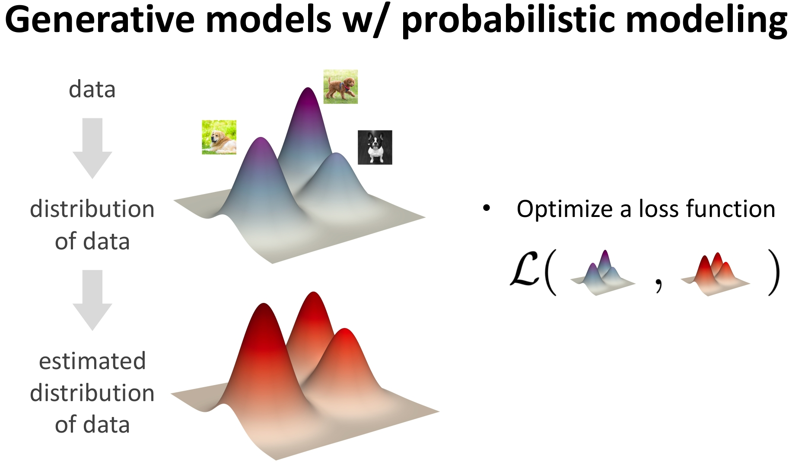
图1 学习过程: 使模型分布逼近数据分布
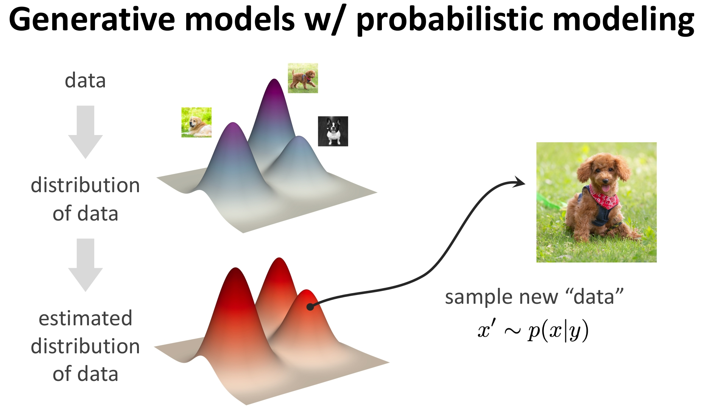
图2 采样过程: 从学到的分布中生成新样本
一个深度生成模型系统通常包含以下四个阶段:
| 阶段 | 英文 | 作用 |
|---|---|---|
| 建模 | Formulation | 将现实问题转化为 $ p(x y) $；将复杂分布分解为可处理的子问题（如扩散过程、自回归因子分解） |
| 表示 | Representation | 用深度网络（Transformer、UNet、MLP）参数化映射或条件分布 |
| 训练 | Objective + Optimization | 定义目标函数（ELBO、对抗损失、去噪得分匹配等）衡量分布差距；用梯度下降优化网络参数 |
| 推理 | Inference | Sampler: 从模型中采样生成新样本 |
简要展开:
核心思想: 深度学习 = 表征学习（Representation Learning）
| 层面 | 内容 | 典型应用 |
|---|---|---|
| 实例表征 (instance-level) | 将原始数据 $ x $ 映射到特征空间（如 CNN 提取图像特征） | 判别任务（分类），最小化预测误差 |
| 分布表征 (distribution-level) | 将简单先验 $ z (0,I) $ 经神经网络变换为复杂数据分布 $ x = G(z) $ | 生成任务，最小化 $ p_(x) $ 与 $ p_{}(x) $ 的差异；典型代表: VAE、GAN、Diffusion Models、自回归模型 |
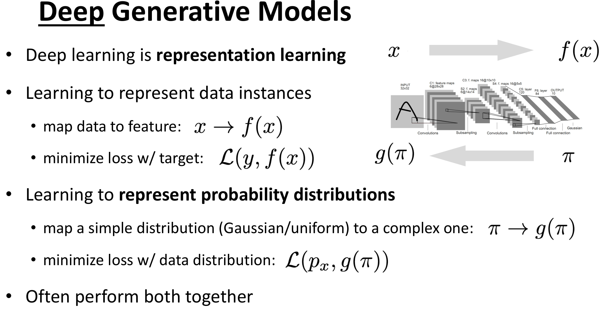
图3 深度生成模型的表征学习（实例表征，分布表征）
前述从 $ p_(x) $ 采样得到的生成是随机的，我们往往还需要有条件的生成——即根据用户意图（如文本提示、类别标签、属性约束等）来控制生成内容。这便引入了条件建模的视角。
生成模型的本质是建模条件分布 $ p(x y) $:
| 变量 | 含义 | 示例 |
|---|---|---|
| y（条件/意图） | 更抽象、信息量更少的输入 | 文本提示（prompt）、约束（如蛋白质对称性）、标签（如“红狐狸”）、属性（如“微笑”“戴眼镜”） |
| x（生成对象） | 更具体、信息量更丰富的输出 | 图像、视频、3D 模型、蛋白质序列、传感器读数、实验数据等 |
典型应用场景:
| 任务 | y（条件） | x（生成结果） |
|---|---|---|
| 文生图 | “泰迪熊在讲课” | 图像 |
| 蛋白质设计 | 对称性约束 | 3D 蛋白质结构 |
| 图像分类（生成视角） | 输入图像 | 类别概率 $ p( x) $ |
| 机器人控制 | 视觉观测 | 动作策略 $ p(a s) $ |
| 图像描述 | 输入图像 | 自然语言句子 |
首先需要具备概率论与生成模型的基础，建议先阅读 机器学习篇-01.生成模型基础。
对联合分布 $ p(x) $ 的建模有两条经典路径:
| 分解方式 | 数学形式 | 对应模型 |
|---|---|---|
| 条件概率分解 | $ p(x) = p(x_1, x_2) = p(x_1),p(x_2 x_1) $ | 自回归模型（AR） |
| 边缘概率分解 | $ p(x) = p(x, z),dz = p(x z),p(z),dz $ | 潜变量模型（Latent Variable Model） |
因此，从建模形式上看，生成模型可大致分为: 自回归模型 与 潜变量模型。下面主要沿潜变量模型这条线展开；沿自回归模型这条线可参阅 AR系列篇-01.AR理论篇。
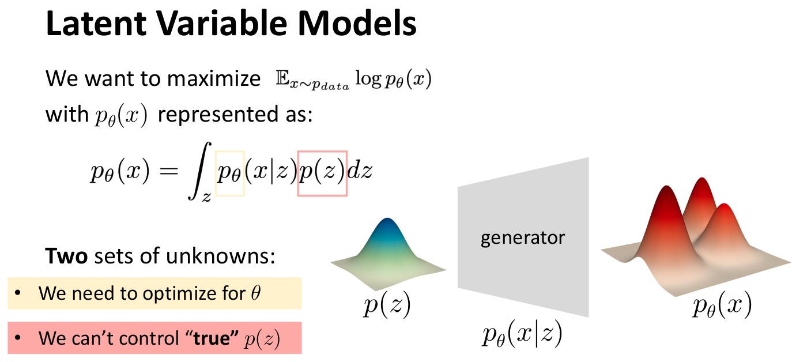
图4 潜变量模型框架与待解决问题
针对这些问题，可采取三种不同的思路，对应 AE/VAE、GAN、DM 三条分支。
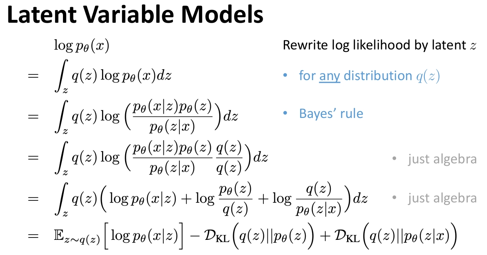
图5 从提议分布 q(z) 到 ELBO 与 VAE
建议阅读顺序:
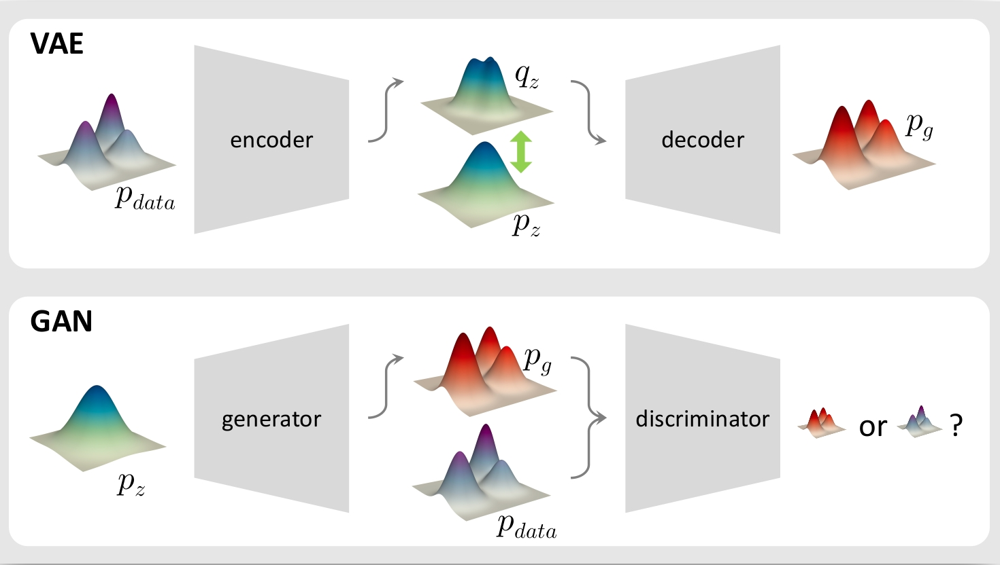
图6 在生成端引入判别模型得到 GAN
建议阅读:
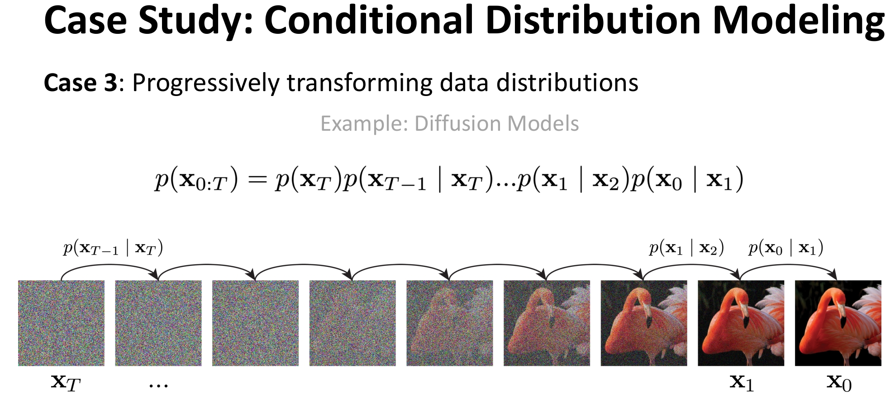
图7 从条件概率/分层 VAE 到扩散模型
建议阅读:
VAE、GAN、DDPM 的目标函数可以统一理解为: 在重构误差的基础上，施加不同形式的正则化（或等价的变体）。下图概括了三者的差异。
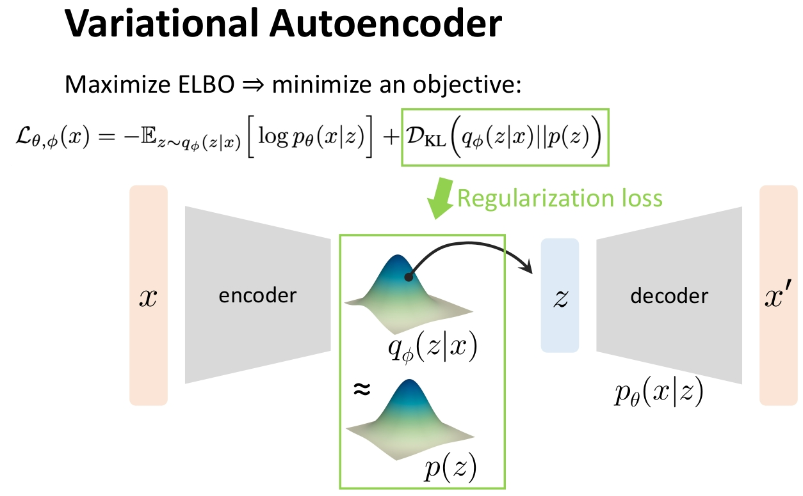
图8 VAE 的损失: 重构误差 + 潜变量正则化
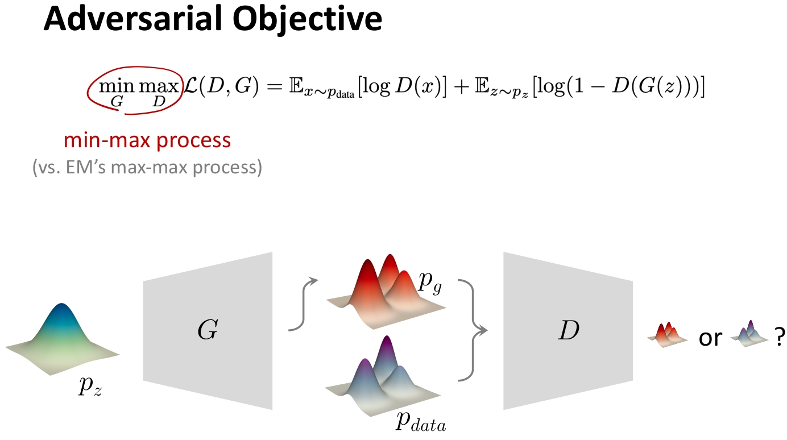
图9 GAN 的损失: 重构误差的替代 + “博弈”正则化
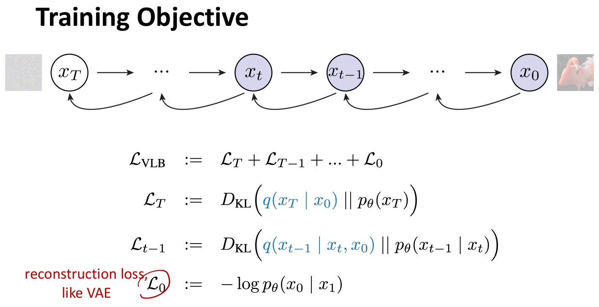
图10 DDPM 的损失: 仅与去噪相关的“重建”项
若想深入理解“为什么 KL 散度的方向不能反”“为什么潜变量常取正态分布”等，可参阅:
有了前面的理论铺垫，若希望动手实现并验证算法，可依次阅读各系列的代码篇（建议先读对应理论篇）:
实现后会发现:无条件生成的结果是随机的，无法按“类别”“文本”等条件控制输出。下一步自然过渡到条件生成: 从 Vanilla 版本扩展到 Conditional 版本。
条件生成相关阅读:
至此，你已经建立起生成模型的基础知识体系。
基础算法在实际中往往存在局限，需要针对性地改进:
在此基础上，可进一步过渡到近年广泛使用的条件扩散与潜空间扩散（如 LDM、CFG，也是 Stable Diffusion 等模型的基础）:
我们对上述内容做一总结: 图11 概括了生成模型从基础到进阶的完整学习路径，便于读者按图索骥、按需选读。
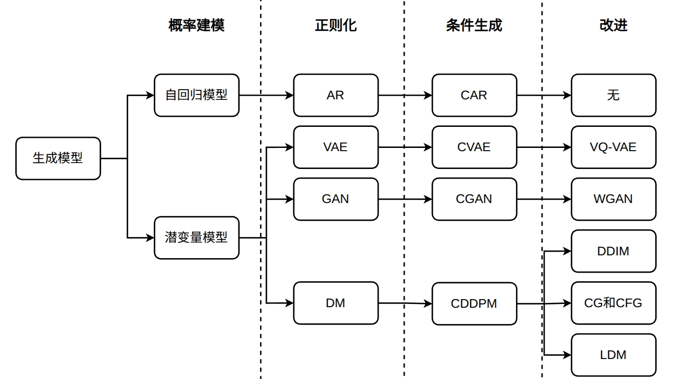
图11 生成模型学习路径
至此，你已经入门生成模型的主干内容。 后续可继续学习 FM（Flow Matching） 等扩展方向。